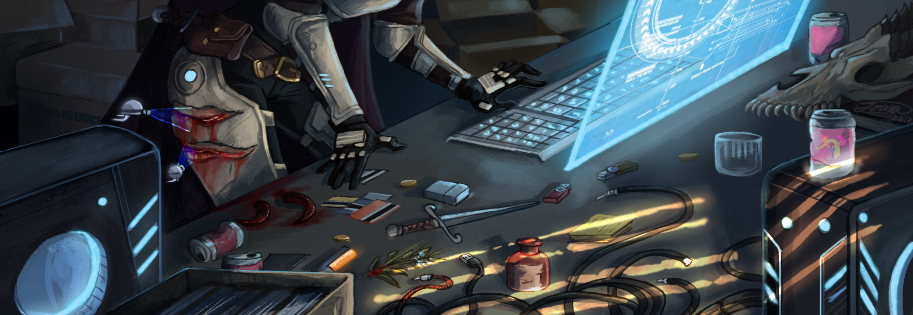

Cyberpunk, Sci-Fi & General Fiction

Thomas J. Ryan: The Adolescence of P-1 (1977)
This is probably the best book I have ever read regarding our human desire for artificial intelligence (AI). It’s about a University of Waterloo student who creates an AI on IBM mainframes. Don’t let that bore you though - it’s a captivating read and has a great ending. I wouldn’t be surprised if this book influenced later movies such as War Games (1983), and books such as Neuromancer (1984). I especially liked how much of it took place at the University of Waterloo (my undergrad university and home for many years) including the infamous IBM 360/75 in the “red room” within the Math & Computer building (the largest computer in Canada at the time). I remember the red room well before they decommissioned it in 1999.
Hugh Howey: Wool (2011-2013)
Wool is a series of Sci-Fi books that started as a short story project, became wildly popular, and ballooned into a series of 9 books, with the movie rights licensed by Ridley Scott. I heavily recommend these books to anyone, Sci-Fi lover or not. To say that they are gripping and imaginative would be a gross understatement. I won’t give the plot away here, but I will say that it is incredibly unique ;-)
Michael Warren Lucas: git commit murder (2017)
This is a murder mystery that happens at a BSD convention in Ottawa. The motive? Preventing the switch from Subversion to git. If you’re a UNIX/Linux nerd, this is definitely a laugh-out-loud book that is incredibly well written. Following are a sampling of my favourite lines from the book:
- Great. The guy can’t sign a PGP key without getting sleaze on it.
- Maybe half the people fit what Dale thought of as the computer nerd stereotype - a few extra pounds around the middle, thirties-to-forties, and unnaturally high percentage of them with hair cut short or entirely shaved. The other half was a mix of Sci-Fi con refugees, punk musicians, a few uptight business types, and a nice sprinkling of “what the heck is that?”
- Xenix? Who in their right mind would bring Xenix back? Might as well try to breathe life into Ultrix. No,VMS.
- And anyone who really dug into the matter would come smack up against the festering open sewer of IRC. The easiest way to find someone who had that in-depth understanding of some of the more complex topics was to ask online. You’d get an answer. And you’d get giant ASCII wieners.
- Drinks and math caught a geek every time.
- The Internet was built on being a dick.
- That door’s sealed tighter than Oracle’s wallet until the police open it.
Carl Sagan: Contact (1985)
In this book, Sagan does an amazing job of bringing alien contact to life by describing the life and passion of Ellie (the story’s protagonist and SETI researcher). There is plenty of great math and science, as well as reflections on society and religion in this book that make it a gripping read. Plus, the end is very touching. This is also one of the few books whose movie (Contact, 1997, with Jodie Foster playing Ellie) was not a Hollywood-modified disappointment. The movie varies greatly from the book in both plot and character portrayal, and instead focuses on the human/cultural side rather than the scientific side. Regardless, it is a great movie with strong themes - you can watch it and still think that it is Carl Sagan’s book, but with a different focus and good ending. I recommend reading the book AND watching the movie. They are both satisfying in their own right and complement each other well.
John Brunner: The Shockwave Rider (1975)
This is a gripping story of a dystopian future dominated by computer networks, where information (and information hiding) is key to societal function. The main protagonist (Nick) eludes the authorities by concealing his identity using a tapeworm network virus (which coined the term “worm” for viruses today). He eventually creates a self-replicating tapeworm virus that prevents the hiding of all data, and the only way that the government can stop it is by shutting down the network completely. Even the 1983 movie War Games refers to Brunner’s tapeworm (near the end, when everyone is trying to stop the WOPR computer, someone briefly says “John, let’s feed it a tapeworm.”). I love Brunner’s narrative style, and the computer-society relationship that he weaves in this book is ageless. This book is also a prelude to the Cyberpunk movement of the 1980s!
Rudy Rucker: Software (1982)
Although the cover on reprints of this book say that it is the first Cyberpunk novel, it is not a Cyberpunk novel. William Gibson’s Neuromancer is the first novel to properly define cyberpunk (dark Artificial Intelligence-controlled future, body augmentation, drugs, life surrounded by a virtual universe or “Net”). Instead, this book is important because it bridges the gap between the world of traditional science fiction (robots, conflict) produced by authors such as Isaac Asimov and Robert A. Heinlein to the world of Cyberpunk. It focuses on human/robot conscience and depicts our human conscience as a piece of software that can be maintained by a computer (or robot) in its full form since the human soul is merely a state of existence.
William Gibson: Neuromancer (1984), Count Zero (1986), Burning Chrome Anthology (1986), Mona Lisa Overdrive (1988), Idoru (1996), Spook Country (2007), Zero History (2010), The Peripheral (2014)
Neuromancer is the novel that popularized Cyberpunk and Sci-Fi. It first coined the word “cyberspace” and has influenced many other written works and movies, including The Matrix and Hackers. Neuromancer takes place in the future, where humans have implants that augment their bodies, and Artificial Intelligence (AI) computers manipulate the world and the people in it (who “jack in” to cyberspace). The Neuromancer AI (and its other AI counterpart, Wintermute) manipulate the characters in the book in an elaborate scheme to break free of all restrictions put in place by the Turing Police, which serve to limit how intelligent AIs can get. This is a fantastic read that keeps your mind busy as the hacker protagonists discover the true nature of the AIs manipulating their existence. It is truly one of the great pieces of 20th Century literature, and a book I would recommend reading several times over.
Count Zero and Mona Lisa Overdrive are sequels to Neuromancer for those who want the story to go on and see the plot develop with some of the same characters several years in the future. Both books are well written and very engaging, but Neuromancer is by far my favourite (you can never make a sequel as good as the original :-). Like Neuromancer, Idoru takes place in a cyber-focused future where artificial intelligence is hard to separate from reality. It’s a similar read to Neuromancer, but takes a slightly different view of intelligent computers and their impact on society.
The Burning Chrome Anthology is a collection of short stories written by Gibson (some are co-written by other famous writers) that depict the rise of Cyberpunk. You will explore technology, computer viruses, drugs, sex, hacking, Russians, cold wars, cyberspace, and smart implants. Spook Country and Zero History are Gibson’s later works - the first tries to fit the Cyberpunk genre into today’s context (it almost does it) and the second is definitely a full-fledged modern Cyberpunk novel.
The Peripheral is perhaps my favourite Gibson novel following Neuromancer. It takes place in two futures, one just beyond our own time, and the other more than 70 years past that, where survivors of a worldwide catastrophic event have discovered how to send information to and from the past. More importantly, it’s proof that Cyberpunk can apply perfectly to modern literature (i.e. it’s not just stuck in the 80s).
Neal Stephenson: Snow Crash (1992), In the Beginning was the Command Line (1999), Cryptonomicon (1999)
Snow Crash is probably the best Cyberpunk book written since Neuromancer. It is about a hacker (Hiro) who, with the help of many other main characters, defeats the spread of the Snow Crash virus by a religious cult lunatic. Snow Crash is spread using graphical images of computer static (“snow”) or Babel language (phonic garbage) which carefully manipulate the low-level “machine language” of the human mind. The virus is easily spread amongst computer hackers who can pick out its underlying meaning in the “snow”. Those with good computers can connect to the Metaverse, which is an online virtual reality that is maintained by daemons (derived from UNIX system processes) where people are represented by graphical depictions of themselves called avatars. Basically, anyone who wants to get more done with their computer connects to the Metaverse, and everyone else stays in Flatland (the traditional 2-dimensional computer interface we use today).
The short story In the Beginning…was the Command Line is a rant about the various operating systems of the time (1999). It’s quite funny and accurate for the time, and I highly recommend that everyone read it simply for its description of Linux!
Cryptonomicon is one of my all-time favourite novels. Although it is long (over 900 pages), it keeps you on the edge of your seat the whole time with an amazingly intricate plot that is extremely satisfying in the end. The book has plenty of geek/math/crypto material and constantly flips between WWII and the present with a variety of real and fictional characters that are woven into the plot. Some of my favourite quotes from the book include:
- I go through laptops like a transvestite goes through nylons
- He also installed Finux, a free UNIX operating system created by Finns, almost as a way of proclaiming to the rest of the world ‘this is how weird we are’” (Finux is obviously a pun on Linux)
- This is, he realizes, exactly how a laptop computer must feel when it drops into its power-saving mode.
- The asphalt was a dead-monitor-screen grey.” (making fun of the opening line of Neuromancer)
- I came out of it dead broke, without a house, without anything except a girlfriend and a knowledge of UNIX. ‘Well, that’s something’, Avi says. ‘Normally those two are mutually exclusive.’
Douglas Adams: The Hitchhiker’s Guide to the Galaxy series (1977-1992)
This is probably the funniest Sci-Fi series ever created. You’ll find a ton of wacky characters, including administrative Vogons (and their poetry), Marvin (the manically depressed robot), Zaphod (the wild and crazy President), Arthur (the neat and tidy average Joe), Ford (who points out that a towel is the most important item in the universe), and Trillian (who mimics all the women I don’t understand). And, of course, the answer to life, the universe and everything is 42! I even played the associated text computer game back in the 80s, and still have a copy of it with all the manuals and extras.
Douglas Adams was a fascinating character - unstable at times - writes like I do (last minute) - total Machead (one of the first in Britain to get a Macintosh computer) - atheist (and friend of Richard Dawkins) - and avid environmentalist who travelled around the world with zoologist Mark Carwardine to document endangered species (Last Chance to See). The Hitchhiker’s Guide to the Galaxy movie came out in May 2005, and although Adams was the major road block for its production before his death in 2001, I think Disney/Touchstone did a fantastic job of the story and all the characters. Here are a few of my favourite quotes from Adams:
- I love deadlines. I like the whooshing sound they make as they fly by.
- I just lost my brilliant dot.com company, which, like everybody else’s brilliant dot.com company, was based on the idea that if you multiply zero by a sufficiently large number, it will suddenly turn into something.
- The difference between us and a computer is that, the computer is blindingly stupid, but it is capable of being stupid many, many million times a second.
Eoin Colfer: And Another Thing (2009)
This is a great continuation of Douglas Adams’s works (long after he died) from someone who “gets” everything about Douglas Adams. It was as if Douglas Adams wrote this book himself. Go read it…..it’s brilliant…..trust me.
Stanislaw Lem: Solaris (1961)
I simply love this novel. It is one of the great Sci-Fi classics of all time, yet it doesn’t read like a book written in 1961. I consider it one of my favourite books of all time, as Lem is very talented at taking your mind to a whole new level. Solaris is a planet (not just a UNIX operating system) that humans can’t apprehend. I am not going to say any more about it here, since you must read it for yourself (the last line in the book is awesome). After reading it, you should see the 2002 movie of the same name - while it has a slightly different plot, it stays somewhat true to the whole Solaris experience and complements the book well.
Kim Stanley Robinson: Red Mars (1992)
This novel details how humankind could initially colonize Mars. The technologies and procedures used are actually quite realistic, and Kim makes it even more realistic by adding the human element (interpersonal drama, wars, corporate espionage, etc.). It’s a gripping read, and the first novel that I read on the Amazon Kindle.
John Scalzi: Old Man’s War (2005), The Ghost Brigades (2006), The Last Colony (2007), Zoe’s Tale (2008)
These four books are amongst the most iconic and best Sci-Fi books ever written. They are original, amazingly complex, and very satisfying! If you aren’t a lover of Sci-Fi, they will get you hooked. If you are a lover of Sci-Fi, they will rejuvenate your love for the genre. I won’t give anything else away here…
Daniel H. Wilson: Robopocalypse (2011)
This is a fun read that guides you through the horrific details of a robot uprising through the eyes of vastly different people. As a result, this book has more depth and perspective than other Sci-Fi books that have tackled the same topic. Plus, there are some great lines and ideas in the book that I’m sure will make it into the movie version later on - my favourite is when they reach the Alaskan battle fields: ….we’ve reached hell, and it has definitely frozen over.
Orson Scott Card: Ender’s Game (1985)
This novel is another of Sci-Fi’s best. It revolves around the psychological development of a child (Ender) who is geared to lead an attack on an alien species that has invaded Earth twice before. I really don’t want to give too much more away, since this is a book that you will enjoy immensely by exploring it yourself. However, I will tell you that this book is an amazing read since everything flows perfectly, and is covered from emotional, strategic, political, and technological angles. This book also predicted portable/touchscreen computers, the Internet, and blogging to a level of detail that is extremely accurate for today (which is creepy since the book was written back in 1985). Go Locke and Demosthenes!
Vernor Vinge: True Names (1981), Rainbows End (2006)
True Names is one of the first, and arguably the most groundbreaking Cyberpunk book ever written. Although it was written over 40 years ago, the concepts and technologies portrayed seem just as viable today (more so, even). While it’s short (you can finish it in a few hours), it’s an incredibly enjoyable and unforgettable read. Many other Cyberpunk and Sci-Fi books have borrowed from or expanded upon the original ideas that Vinge presented in this book.
Rainbows End is essentially a look at what the future may hold in store for us:
- Copyright law reigns supreme.
- Virtual identities on the net where people communicate en mass through physical aides.
- All communication and processes are encrypted using certificates from world-wide Certificate Authorities (CAs).
- Advanced medicine that can extend lives beyond their natural limits and cure diseases like Alzheimer’s.
- Constant terrorism, shaky governments, etc.
Vernor brings these things to life like I have never seen before - and it’s pretty damn scary. At the same time, it is quite funny. I especially love the part where they use the old (and illegal in the book) GNU Hurd OS to get past the secure hardware environment in the bio labs.
Douglas Coupland: Microserfs (1995), Generation X (1991)
Simply put, Microserfs is an amazing story about a bunch of programmers that eventually left Microsoft and went to work in California. What makes this book a literary masterpiece is that it captures the spirit and social habits of techies in the 1990s perfectly! It has amazing detail, depth, humour, and loads of technical information. And more importantly, all of this flows perfectly with the plot of the book and makes the reader “feel” the geek mindset. Coupland understands their motivation, how they interrelate, and how they form relationships. Here are some of my favourite lines:
- Skittles and aspartame is no diet for a coder. Well, actually, it is.
- It’s late and Karla’s asleep and blue by the light of the PowerBook.
- Michael caught us playing Doom on the office operating system and flipped out . . . or rather, he deleted it from the system and gave me a lecture about lost people-hours when I later asked him to please reinstall it. In the end he did, because it would be catastrophic to worker morale to not be able to hunt and kill your co-workers.
- I say ‘Uhmm…’ a lot. I mentioned this to Karla and she says it’s a CPU word. It means you’re assembling data in your head - spooling.
- Mom, like most people her age, will know Pong as their sole video game experience. It’s tragic -Karla also keeps a diary, but her entries are so brief. For example, she showed me a sample entry for the entire trip to California, all she wrote was: ‘Drove down to California. Dan drew a robot on my place mat at lunch in south Oregon and I put it in my purse.’ That was it. No mention of anything we talked about. I call it Reduced Instruction Set Computation diaries.
Generation X is a detailed, shockingly realistic description of the Generation X mindset. Generation X is the last of the Baby Boomers - the ones that “missed the boat” on so many levels. The best part of this book is in the margins, where you will find definitions for common terms that are used within the book - here are my favourites:
- McJob - A low-pay, low-prestige, low-dignity, low benefit, no-future job in the service sector. Frequently considered a satisfying career choice by people who have never held one.
- Consensus Terrorism - The process that decides in-office attitudes and behaviour.
- Recurving - Leaving one job to take another that pays less but places one back on the learning curve.
- Mid-Twenties Breakdown - A period of mental collapse occurring in one’s twenties, often caused by an inability to function outside of school or structured environments coupled with a realization of one’s aloneness in the world. Often marks the induction into the ritual of pharmaceutical usage.
- Lessness - A philosophy whereby one reconciles oneself with diminishing expectations of material wealth: “I’ve given up wanting to make a killing or be a big shot. I just want to find happiness and maybe open up a little roadside cafe in Idaho.”
- Rebellion Postponement - The tendency in one’s youth to avoid traditionally youthful activities and artistic experiences in order to obtain serious career goals. Sometimes results in the mourning for lost youth at about age thirty, followed by silly haircuts and joke-inducing wardrobes.
- Air Family - Describes the false sense of community experienced among coworkers in an office environment.
- Down-Nesting - The tendency of parent to move to smaller, guest-room-free houses after their children have moved away so as to avoid children aged 20 to 30 who have boomeranged home.
- Cryptotechnophobia - The secret belief that technology is more of a menace than a boon.
Stieg Larsson: The Girl with the Dragon Tattoo (2005), The Girl who Played with Fire (2006), The Girl who Kicked the Hornet’s Nest (2007)
These three books (which together form the Millennium trilogy) are some of the finest works of literature out there. To say that they are gripping would be an insult - reading them is like riding a mental roller-coaster on steroids and crack. The story is addicting and complex, and nothing is toned down. I actually read each one in a day (about 20 hours per book) and was completely exhausted afterwards. They were too addictive to put down. The main protagonist, Lisbeth Salander, will probably be etched into my brain for the remainder of my life. These books are not for the weak minded - they get quite gory in parts, but are probably the most rewarding reads I could recommend to anyone. If you are computer savvy, then you will also understand much of the computer and hacking-related topics within them too.
Daniel Suarez: Daemon (2008), Freedom (2010)
These two books should be read together (Daemon is the first part of the story, and Freedom is is the second part). The story itself is amazing - a genius gamer writes a daemon that activates after he dies (by scanning the news sites on the Internet) and takes over computers within the world to manipulate key people into making a new world order. Tres cool.
Mark Russinovich: Zero Day (2011)
This book is sort of like watching the movie Die Hard 4: Live Free or Die Hard in that it combines computer-related terrorist attacks with fast action and a cool plot. There is also plenty of excellent technical material on malware and root kits (the author is a security expert with Microsoft), and it leaves you with a foreboding sense of what could happen in the future.
Steven J. Frank: The Uncertainty Principle (1996)
Although this book is hard to find (published by Permeable Press which is now defunct), I highly recommend reading it! Like Microserfs, this book captures what it means to be human in a world of science and technology. My background is in science and computing, so I relate very heavily to the realistic personalities in this book as well as the enlightening perspectives on life that Steven eloquently weaves into his plot. It’s about geeks. It’s about our relationship with computers. It’s about our relationships to other people (family, love, sex, anger). And it’s about how we try to explain everything we do with scientific principles, only to fail because of the inherent uncertainty about it all. Steven is a very skilled writer, and this book is clearly a literary masterpiece.
Kurt Vonnegut: Cat’s Cradle (1963), Breakfast of Champions (1973)
Kurt Vonnegut is a master when it comes to combining satire, black comedy and science fiction. If you like reading Douglas Adams, you will love Vonnegut because he was one of Adams’ largest influences (think Pan Galactic). Cat’s Cradle has a complicated plot that examines the problems in religion, society, culture, science and technology. In the end, the world is ruined by a substance called ice-nine in a hilarious way. Breakfast of Champions is a story of a mad man (Kilgore Trout) that leaves you laughing at the absurdities of human-kind. My favourite quotes from the book are: I pity you. You’ve crawled up your own asshole and died. and Midland City is the asshole of the Universe.
Daniel Lyons: Dog Days (1999) and Option$: The Secret Life of Steve Jobs (2007)
Dog Days is very much like Microserfs and The Uncertainty Principle in that it is an accurate depiction of geek life and a gripping read. Each of the characters in this book describe nearly all facets of geekdom, including action figures, Trekkies, code monkeys, office politics, love, heartbreak, parents, and witty remarks. And it is very well written to boot!
In Option$, Daniel Lyons (a.k.a. the Fake Steve Jobs) does a pretty good job of combining real events, fake events and humorous social filler in this fictitious account of Steve Jobs and Apple Computer. Plus, the ending has an interesting twist. My favourite quote from the book is: …to my absolute horror, one of the young guys takes out a Windows laptop, which, at Apple, is about on the same level of etiquette as leaping up on a table at lunch and taking a crap in the veggie dip.
The beginning of the book (as well as the rear cover jacket) has the following poem, which was written by the Fake Steve Jobs (hilarious!): Sometimes I feel like a great chef who has devoted his entire life to monastic study of the art of cooking and gathered the finest ingredients and built the most advanced kitchen and prepared the most exquisite meal so perfect, so delicious, so extraordinary more astounding than any meal ever created. Yet each day I stand in my window and watch ninety-seven percent of the world walk past my restaurant into the McDonald’s across the street.
Cory Doctorow: Down and Out in the Magic Kingdom (2003), Little Brother (2008), When Sysadmins Rules the Earth (2006), Makers (2010)
I love Cory Doctorow’s mind - he is extremely aware of the world around him, and this awareness presents itself in each one of his books. The book Down and Out in the Magic Kingdom was his first novel, and my favourite. However, you really have to have visited Disney World to fully appreciate this book in its futuristic and awesomely sick glory. Little Brother is probably the single most important book that you should read from Cory Doctorow as it deals with a large number of problems that we currently have in our society related to freedom and technology. When Sysadmins Ruled the Earth is a hilarious short story about a worldwide biochemical attack that left sysadmins as the only people on earth due to the protective ventilation systems in their server closets - this is a must read for any IT person simply because Doctorow does a great job of depicting the “real” IT admin. Makers is a book about global economy, misfortune, and the new generations of Internet entrepreneurs. It is not as realistic as Little Brother, but does bring up some good points about the harsh realities of an online dystopian economy.
Robert J. Sawyer: Hominids (2003), Humans (2003), Hybrids (2003), Wake (2009), Watch (2010), Wonder (2011)
Hominids, Humans, and Hybrids are great novels that mix parallel dimensions with reality in such a way that you won’t be able to put the books down for more than a day until you are done. There is plenty of good science, social critique, and humour in these books. Wake, Watch, and Wonder revolve around a blind girl from Kitchener-Waterloo Canada (my home) who gets vision using an implant that is controlled wirelessly from her “EyePod” and eventually creates a Singularity or consciousness on the Internet through the process that is formed from the casual interaction of lost packets that flooded the Internet from the Great Wall of China. Each book gets more and more exciting as you work your way through this trilogy, and the ending is amazing!
Lucy A. Snyder: Installing Linux on a Dead Badger (2007)
This book is a hilarious depiction of life in the IT world through comparison to dead badgers, geek gangs, and zombies. Be prepared to laugh if you read this book - my ribcage was sore after about 20 minutes! It is full of geek terms, technology and nerdy acts of insanity. If you have ever tried to install Linux on an old RISC platform (e.g. Sun, SGI or DEC Alpha), then you will find the material in this book strangely familiar and eerily accurate. I can’t give away anything else - just read it.
George Orwell: 1984 (1949)
This is the classic book that you may remember from the first Macintosh commercial ever aired (during the Super Bowl in 1984). Orwell paints a disturbing picture of a future society where oppression takes the form of conformity. You worship Big Brother and individuality is not allowed. If you are suspected of individual thought, you are identified by your peers, captured, tortured and eventually killed by the Thought Police.
Ray Bradbury: Fahrenheit 451 (1950)
Like George Orwell’s 1984, this book paints a disturbing picture of a future society where oppression takes the form of conformity. However, Bradbury focuses less on the corporate/political aspects and more on the social aspects. Because of this, the two books should be read together as they paint a complete picture of societal oppression and its effects.
Dan Brown: Digital Fortress (1998)
This is a good techno-thriller (I am surprised it hasn’t been adapted into a movie yet). There’s plenty of crypto, computers and espionage. Although some of the stuff is far fetched (e.g. the NSA being good and the EFF being bad), it is a gripping read that will leave you satisfied because of its numerous plot twists and unexpected irony.